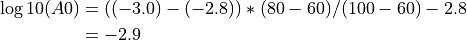

ML¶
Standard local (Richter) magnitude
Description¶
ML is the standard local (Richter) magnitude originally designed for Southern California by Richter [53].
General (default) conditions apply:
Amplitude unit in SeisComP: millimeter (mm) by Wood-Anderson simulation.
Time window, configurable: 150 s by scautopick or distance dependent.
Distance type: epicentral distance.
Distance range: 0 - 8 deg, maximum is configurable:
magnitudes.ML.maxDistanceKm, measurements beyond 8 deg will be strictly ignored.Depth range: 0 - 80 km, configurable for amplitude measurements.
Amplitudes¶
The ML amplitude calculation is similar to the original ML. Waveforms from both horizontal components are time-windowed and restituted to the Wood-Anderson seismograph. Within the time window the amplitudes are measured on both horizontal components and combined. The methods for measuring and combining amplitudes are configurable in the global bindings.
Station Magnitudes¶
The individual station ML is calculated using the following formula:
A is the measured ML Wood-Anderson amplitude in millimeters. The second term
is the empirical calibration function, which in turn is a function
of the epicentral distance (Richter [53]). This calibration
function and distance range can be configured globally or per station using
global bindings or the global module configuration variable
module.trunk.global.magnitudes.ML.logA0 in global.cfg, e.g.
module.trunk.global.magnitudes.ML.logA0 = "0:-1.3,60:-2.8,100:-3.0,400:-4.5,1000:-5.85"
module.trunk.global.magnitudes.ML.maxDistanceKm = "-1"
The logA0 configuration string consists of an arbitrary number of distance-value pairs separated by comma. Within the pairs, the values are separated by colon. The distance is epicentral distance in km and the second value corresponds to the log10(A0) term above.
Within each interval the values are computed by linear interpolation. E.g. for the above default specification, at a distance of 80 km the log10(A0) value would be

In other words, at 80 km distance the magnitude would be
which is according to the original Richter formula [53] if the amplitude is measured in millimeters.
Several distance-value pairs can be configured for different ranges of epicenter distance.
Network magnitude¶
By default, the mean is calculated from the station magnitudes to form the network magnitude.
Configuration¶
Set the configuration and calibration parameters in the global bindings similar
to MLv.
Instead configuring lots of global bindings profiles or station bindings one
line per parameter can be added to the global module configuration
(global.cfg).
Add ML to the list of computed amplitudes and magnitudes in the configuration of scamp and scmag and in scesv or scolv for visibility.
Module Configuration¶
Note
magnitudes.ML.* Regionalized calibration parameters for ML. The region itself is defined by another magnitude-type ML profile.
Note
magnitudes.ML.region.* Add one profile for every region. The profile name equals the name of a polygon configured in the BNA file of the Magnitude-type profile. The Magnitude-type profile and the polygon must exist. The special name “world” corresponds to the region of the entire planet as a fallback.
Note
magnitudes.ML.region.$name.* $name is a placeholder for the name to be used.
-
magnitudes.ML.region.$name.logA0¶ Type: string
Overrides the calibration function log10(A0) for computing ML per region. See logA0 description in the bindings.